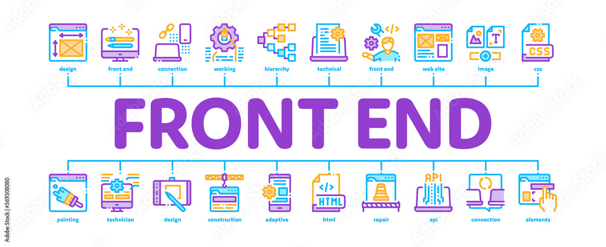

Introdução ao Curso de Desenvolvimento de Interfaces Web
Aprenda tudo sobre como desenvolvolver o seu próprio site
- Apresentar os padrões web e ressaltar a importância do seu uso na construção de aplicações Web
- Apresentar as principais linguagens e plataforma de programação de interfaces Web
- Capacitar os alunos a criar páginas web utilizando os padrões e as linguagens citados
- Apresentar as tendências e novas tecnologias relacionadas à Web e à Internet
Ferramentas de Desenvolvimento
VisualStudio Code Notepad++ Brackets Sublime Text